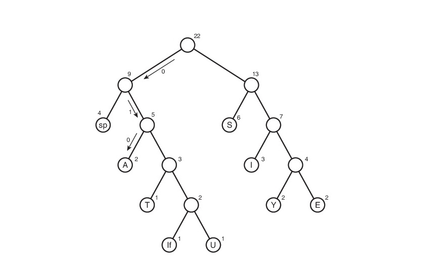

Вопрос 10
Методы сжатия данных
Метод и коды Хаффмана
Алгоритм Хаффмана - это алгоритм сжатия данных, который формулирует основную идею сжатия файлов. Он использует кодирование переменной длины, которое позволяет использовать меньшее количество битов для кодирования наиболее часто встречающихся символов и большее количество битов для кодирования редких символов. Это позволяет уменьшить размер файла и ускорить передачу данных.
Для сжатия файла с помощью алгоритма Хаффмана, сначала необходимо подсчитать частоту встречаемости каждого символа в файле. Затем, используя эти частоты, строится дерево Хаффмана, в котором каждый символ представлен узлом дерева, а его частота - весом узла. Часто встречающиеся символы имеют более короткие коды, чем редкие символы, что позволяет сократить размер файла
Для кодирования файла используются коды Хаффмана, которые представляют собой последовательность битов, соответствующих каждому символу. Коды Хаффмана строятся путем прохождения по дереву Хаффмана от корня к листьям, где каждый лист соответствует символу и содержит его код. При кодировании файла каждый символ заменяется на его код Хаффмана, что позволяет сократить размер файла
Для декодирования файла необходимо использовать ту же таблицу Хаффмана, что и для кодирования. Декодирование происходит путем прохождения по дереву Хаффмана от корня к листьям, где каждый лист соответствует символу и содержит его код. При декодировании файла каждый код Хаффмана заменяется на соответствующий символ, что позволяет восстановить исходный файл
Дерево строится следующим образом:
- Каждый символ строки становится узлом будущего дерева
- Узлы размещаются в порядке возрастания чатсотности в очереди так, чтобы у выхода очереди находились самые редкие символы
- Два узла с наименьшей частотой извлекаются из очереди и объединяются одним узлом, формируя мини-дерево из двух узлов и корня, частота которого равна сумме частот двух извлеченных узлов
- Мини-дерево добавляется в очередь в нужное место в зависимости от частоты корня
- Шаги 3 и 4 повторяются до тех пор, пока в очереди не останется один узел - корень дерева Хаффмана
Примечание: в последнем этапе на картинке опечатка - на правом дереве вместо символа пробела должен быть символ S.
Метод RLE
Метод RLE (Run-Length Encoding) — это алгоритм сжатия данных, который заменяет повторяющиеся символы (серии) на один символ и число его повторов. Этот алгоритм является простым и эффективным для данных, содержащих много повторяющихся символов.
Пример RLE сжатия:
Исходная строка: aaababbcbbb
Сжатая строка: (a, 3) (b, 1) (a, 1) (b, 2) (c, 1) (b, 3)
В данном примере, алгоритм RLE заменяет три подряд идущих символа 'a' на пару (a, 3), один символ 'b' на пару (b, 1), один символ 'a' на пару (a, 1) и так далее.
RLE часто используется для сжатия изображений, особенно тех, которые содержат большие области однородных цветов, таких как черно-белые изображения или изображения с простыми геометрическими формами. Однако, для данных с частыми изменениями между значениями, RLE может быть неэффективным.
Алгоритмы LZ (LZ77 и LZW)
Алгоритмы LZ, такие как LZ77 и LZW, являются алгоритмами сжатия без потерь, которые широко применяются в области сжатия данных и хранения информации. Они были разработаны Абрахамом Лемпелем и Якобом Зивом в 1977 году и позднее усовершенствованы.
Алгоритм LZ77
Алгоритм LZ77 использует словарь для замены повторяющихся фрагментов данных. Он осуществляет сжатие путем представления повторяющихся фрагментов в виде пар (смещение, длина) внутри словаря.
Рассмотрим пример алгоритма LZ77 на строке "ABABABA". Для начала создадим пустой словарь и инициализируем его первыми двумя символами строки.
Исходная строка: ABABABA
Словарь: A, B
Сжатие:
1. Первый символ "A" не находится в словаре, поэтому он добавляется в словарь, и сжатие остается пустым.
Исходная строка: ABABABA
Словарь: A, B
Сжатие:
2. Второй символ "B" также не находится в словаре, поэтому он добавляется в словарь, и сжатие остается пустым.
Исходная строка: ABABABA
Словарь: A, B
Сжатие:
3. Третий символ "A" уже находится в словаре, поэтому мы ищем самую длинную подстроку, начинающуюся с этого символа, которая уже есть в словаре. В данном случае, такой подстрокой является "ABA" (смещение = 1, длина = 3). Мы добавляем пару (1, 3) в сжатие и продолжаем с четвертого символа.
Исходная строка: ABABABA
Словарь: A, B, ABA
Сжатие: (1, 3)
4. Четвертый символ "B" уже находится в словаре, и самая длинная повторяющаяся подстрока, начинающаяся с этого символа, является "ABA" (смещение = 1, длина = 3). Мы добавляем пару (1, 3) в сжатие и продолжаем с пятого символа.
Исходная строка: ABABABA
Словарь: A, B, ABA
Сжатие: (1, 3), (1, 3)
5. Пятый символ "B" уже находится в словаре, и самая длинная повторяющаяся подстрока, начинающаяся с этого символа, является "ABAB" (смещение = 2, длина = 4). Мы добавляем пару (2, 4) в сжатие и продолжаем с шестого символа.
Исходная строка: ABABABA
Словарь: A, B, ABA, ABAB
Сжатие: (1, 3), (1, 3), (2, 4)
6. Шестой символ "A" уже находится в словаре, и самая длинная повторяющаяся подстрока, начинающаяся с этого символа, является "ABABA" (смещение = 2, длина = 5). Мы добавляем пару (2, 5) в сжатие и продолжаем с седьмого символа.
Исходная строка: ABABABA
Словарь: A, B, ABA, ABAB, ABABA
Сжатие: (1, 3), (1, 3), (2, 4), (2, 5)
7. Седьмой символ "B" уже находится в словаре, и самая длинная повторяющаяся подстрока, начинающаяся с этого символа, является "ABAB" (смещение = 3, длина = 4). Мы добавляем пару (3, 4) в сжатие.
Исходная строка: ABABABA
Словарь: A, B, ABA, ABAB, ABABA
Сжатие: (1, 3), (1, 3), (2, 4), (2, 5), (3, 4)
Таким образом, сжатие алгоритмом LZ77 для строки "ABABABA" будет состоять из пар (смещение, длина): (1, 3), (1, 3), (2, 4), (2, 5), (3, 4).
Алгоритм LZW
Алгоритм LZW является улучшенной версией алгоритма LZ77. Он также использует таблицу, но добавляет новые фразы в словарь при сжатии, а не только заменяет повторяющиеся фрагменты.
Рассмотрим пример алгоритма LZW на строке "aaababbaab". Для начала создадим пустой словарь и инициализируем его однобуквенными символами.
| Код | Текст |
|---|---|
| 0 | a |
| 1 | b |
"aaababbaab" - а есть в таблице, идем по строке пока не найдем отустствующий в таблице текст
"аaababbaab" - аа нет в таблице, выводим код для предыдущей (0) и заносим в таблицу аа, добавляем следующий символ строки, так как аа не было в таблице
| Код | Текст |
|---|---|
| 0 | a |
| 1 | b |
| 2 | аа |
"аababbaab" - ааb нет в таблице, идем по строке пока не найдем отустствующий в таблице текст
Алгоритмы LZ77 и LZW являются эффективными методами сжатия данных. Они позволяют уменьшить размер данных, сохраняя при этом информацию о повторяющихся фрагментах. Оба алгоритма широко используются в области сжатия текстовых и графических данных, а также в архивации и других приложениях.